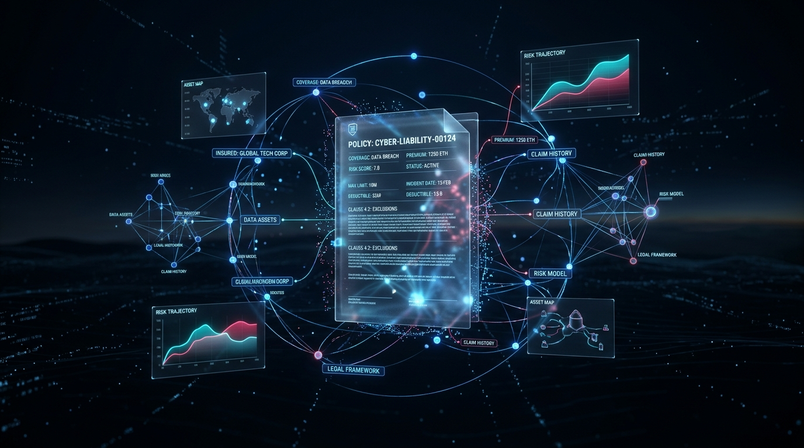

AXA Group Operations • Enterprise AI
PROJECT // 01
Computable Contracts via Multimodal LLMs & Graphs
Production-ready entry module for AXA's Computable Contracts platform. Evaluated 25+ document parsers and engineered a GPT-4o multimodal parsing pipeline with Neo4j/Kuzu graph database integration, Clean Architecture, and Langfuse observability.
View Repository